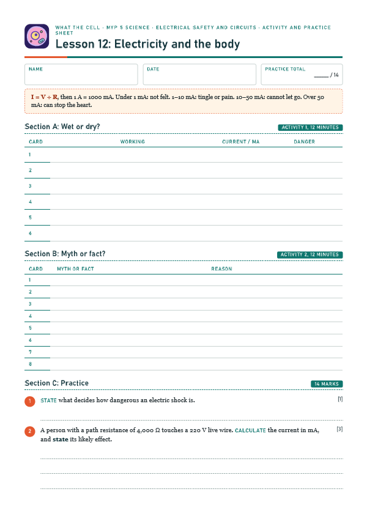

By the end of the lesson you can
- Explain why the current through the body decides how dangerous a shock is
- Use I = V / R to calculate the current through a person
- Explain why wet skin makes a shock far more dangerous
- Describe what to do if someone gets an electric shock
Keys: arrows or a presentation clicker move the slides, F for full screen. Slides with a red dot have a video or simulation.
Videos (all 5 minutes or less)
- 3:52
What actually happens when you get electrocuted
SciShow. Why the current matters most, and how it affects muscles and the heart. Slide 8.
- 3:31
What happens to your body when you are electrocuted?
Life Noggin. An animated explanation of an electric shock. Slide 5.
Simulations
- Lab
Home Safety Lab: current through the body
What the Cell. Choose the voltage, skin and floor, see the current through a person, and test what an RCD does.
Print and practise

Activity and practice sheet
Used in the lesson’s activities, with practice questions. Your teacher has the answers.
Download (PDF)Lesson 12 slides
All 22 slides in one file, to read again or print. The video buttons on the slides open YouTube.
Download the slides (PDF)Revising? The Revision tab on the unit page has the unit notes and review.
Notes: Electricity and the body
The current harms
A current through the body interferes with nerves and the heart. Under 1 mA is not felt; 1 to 10 mA is a tingle or pain; 10 to 50 mA can make muscles clamp so you cannot let go; over about 50 mA can stop the heart.
You become part of the circuit
Touching a live wire while another part of you touches the ground completes a circuit through your body. The current is I = V / R, where R is the resistance of the path.
Water is dangerous
Most of the body's resistance is in the skin. Wet or sweaty skin can have about 100 times less resistance than dry skin, so the same 220 V drives about 100 times more current.
Worked example
Dry skin, 100,000 Ω: I = 220 / 100,000 = 2.2 mA, a tingle. Wet skin, 1,000 Ω: I = 220 / 1,000 = 220 mA, enough to kill.
Heat and fire
Current heats wires: P = I2 × R. Too much current or a loose connection can make wires, plugs and sockets hot enough to melt insulation and start a fire.
If someone gets a shock
Do not touch them. Switch off the power at the switch, plug or breaker. If you cannot, stand on something dry and push the source away with a dry non-metal object. Call for help: 115 for an ambulance in Vietnam.
Key words
| electric shock | current flowing through the body |
|---|---|
| path | the route the current takes through the body; across the chest is worst |
| skin resistance | most of the body's resistance; much lower when wet |
| I = V / R | current through a person = voltage / resistance of the path |
| mA | milliamp: 1 mA = 0.001 A |
| overheating | wires get hot when the current is too big: P = I2 × R |
| earth (ground) | the ground completes a circuit through a person touching a live wire |